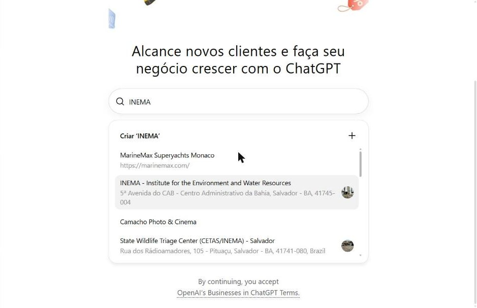
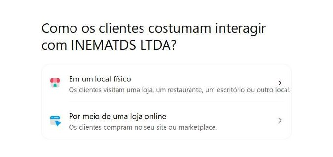

Empresa en ChatGPT es un kit gratis para que reclames el perfil de tu empresa en el Centro de Negocios de ChatGPT (Business Hub), lanzado por OpenAI en noviembre de 2026, como el perfil de empresa de Google. Sirve si tienes una tienda, consultorio, oficina o vendes por internet. Incluye una prueba de lo que ChatGPT dice hoy sobre ti, la ficha para completar, consejos sobre lo que nos salió mal y una solicitud lista para que un agente de IA registre tu empresa desde tu navegador. Si lo haces a mano, solo necesitas una cuenta de ChatGPT, incluso la gratuita, y no cuesta nada. La opción con el agente es opcional: usa Claude Code, de otra empresa (Anthropic), y requiere un plan pago de Claude y una computadora con Chrome.
Antes y después de reclamar
😩 Sin el perfil
ChatGPT responde sobre ti con lo que encuentra: un horario desactualizado, un teléfono equivocado, un precio inventado. O muestra otra empresa con un nombre parecido.
Cuando buscamos “INEMA”, mostró el instituto ambiental de Bahía, con 6 direcciones. Ninguna era la nuestra.
😌 Con el perfil
Tú indicas el nombre, el sitio web, la categoría y una descripción con tus propias palabras. El sitio queda verificado y ChatGPT tiene una fuente oficial: tú.
Después de verificar tu identidad, OpenAI promete mostrar cuántas veces ChatGPT menciona tu empresa y permitirte crear el agente que responde a los clientes. Aún no lo hemos visto: nuestro perfil está esperando la selfie.
Fuente de la cifra de usuarios y de la función: OpenAI, “Empresas en ChatGPT”. La función está en beta: las reglas pueden cambiar y todavía no está disponible para todas las empresas ni en todos los países. En Brasil, el 22/11/2026, estuvo disponible para nosotros.
Entiéndelo en pocos minutos
Estamos produciendo el video con el paso a paso; lo agregaremos aquí cuando esté publicado.
Cómo reclamarlo, pantalla por pantalla
Estas son las pantallas de nuestro registro, en portugués, tal como nos aparecieron.
Busca tu empresa
Ve a chatgpt.com/business-hub (o al menú lateral de ChatGPT) y busca el nombre. Prueba con el nombre corto y el completo. ¿Encontraste la tuya? Elige la que tiene tu dirección. ¿No aparece? Haz clic en Crear.


Demuestra que la empresa es tuya
Primero te pregunta cómo atiendes a tus clientes. Local físico (tienda, consultorio, oficina): la prueba suele ser un código enviado al teléfono comercial. Tienda en línea: te pide el sitio web y un registro que debes agregar al DNS, la “lista de direcciones” de tu dominio. Esto se configura en el panel de quien vendió tu dominio (Registro.br, Hostinger, GoDaddy, Cloudflare…): envíale una captura de esta pantalla a quien administra tu sitio web; lo hará en un minuto. También puedes dejar que el agente lo haga. Otra opción es verificarte con el correo de la empresa o la tienda Shopify, cuando ChatGPT las ofrezca.


Cuéntales quién eres
Elige una categoría de la lista, escribe una descripción de hasta 300 caracteres e indica tus condiciones de entrega y devolución. Escribe cómo quieres que ChatGPT hable de tu empresa. Después, verifica tu identidad con un documento y una selfie: sin eso, el perfil queda como borrador. Luego invita a tu equipo.


Un agente hizo el registro por su cuenta
No completamos el formulario a mano. Le pedimos a Claude Code, un agente de IA, que usara nuestro navegador con la sesión iniciada. Hizo clic, leyó las pantallas, completó los datos y solo se detuvo en los pasos que debe hacer el propietario.
- Abrió el Centro de Negocios
en Chrome, con la sesión iniciada en la cuenta de la empresa. Buscó “INEMATDS” (sin resultados) e “INEMA” (el instituto de Bahía) y mostró el problema. - Creó el perfil
“Crear ‘INEMATDS LTDA’”, tienda en línea, sitio inema.club. - Se detuvo y pidió permiso
antes de modificar el DNS del sitio. Cuando le dimos el visto bueno, agregó el registro, comprobó que ya aparecía en internet e hizo clic en “Verificar dominio” (Verify domain). Se aprobó enseguida. - Completó el resto
categoría “Empresa de IA”, descripción (la acortó al ver que se cortaba en los 300 caracteres), entrega y devolución. Luego envió el formulario. - Entregó el informe
capturas de cada pantalla y lo que falta: verificar la identidad, algo que solo puede hacer el propietario.
🤖 Lo que hace el agente
Busca, crea, completa los datos, agrega el registro DNS (si se lo permites) y verifica cada paso.
✋ Cuándo se detiene
Antes de modificar el DNS, publicar tu teléfono o correo y enviar el formulario. Te pregunta y espera.
👤 Lo que solo tú puedes hacer
Ingresar el código del teléfono, el documento y la selfie. El agente nunca lo hace por ti.
Lo que aprendimos al hacerlo de verdad
Todo esto nos pasó durante el registro. El kit incluye la lista completa, con 19 consejos.
🔎 Busca de las dos formas
Prueba el nombre corto y el completo. Confundir empresas homónimas es el error más común: “INEMA” mostró otra empresa.
🏢 Usa la cuenta de la empresa
Quien reclama el perfil se convierte en su propietario. No uses la cuenta personal de un empleado que podría irse.
✂️ 300 caracteres, sin aviso
La descripción se corta a mitad de una palabra. Cuenta los caracteres antes de enviarla. El kit incluye un contador.
⏳ El registro DNS vence
En unas 24 horas. Agrégalo y verifícalo el mismo día. No lo borres después.
📋 La categoría se elige de una lista
Busca por palabra. No hay una categoría “curso” para cursos en línea: usamos “Empresa de IA”.
📞 El teléfono y el correo serán públicos
Son opcionales. Incluye solo los datos donde puedas recibir consultas de clientes.
↩️ Devoluciones en Brasil
Las compras en línea ya tienen un plazo de 7 días para arrepentirse. Elegimos “gratis, 7 días”.
🧩 Las extensiones pueden estorbar
Una extensión del navegador se superponía y capturaba las teclas. Cierra las extensiones o usa una ventana limpia.
🪪 Sin verificar tu identidad, queda como borrador
El documento y la selfie habilitan el panel, el agente de la empresa y todas las opciones de edición.
Haz la prueba y luego pídele ayuda al agente
Puedes hacerlo a mano y gratis, siguiendo los 3 pasos de arriba (nosotros lo hicimos en una computadora). O, si ya usas un agente de IA, puedes dejar que lo haga como lo hicimos nosotros.
1. Averigua qué dice hoy
Pregúntale a ChatGPT qué es tu empresa, cuál es su sitio web, su teléfono y su horario. Anótalo. El kit incluye 8 preguntas listas y una ficha para comparar el antes y el después.
2. A mano o con el agente
A mano: sigue los 3 pasos de arriba; es gratis. Con el agente: Claude Code es un asistente de IA de Anthropic que trabaja en tu computadora. Con la extensión Claude in Chrome, usa tu navegador con la sesión iniciada. Necesitas un plan pago de Claude. Pega la solicitud de abajo y reemplaza los datos entre < >.
3. Da tu aprobación y tómate la selfie
El agente se detiene y pregunta antes de cada paso delicado. Verificar tu identidad te corresponde a ti.
Quiero registrar mi empresa en ChatGPT (Centro de Negocios, chatgpt.com/business-hub). Lee el kit en https://github.com/inematds/empresa-no-chatgpt (los consejos y la ficha del perfil). Datos de la empresa: - nombre: <NOMBRE> - cómo atiende a sus clientes: <local físico o tienda en línea> - sitio web: <SITIO WEB> dirección (si es un local físico): <DIRECCIÓN> - qué hacemos: <2 o 3 frases> Reglas: 1. Usa mi navegador, con la sesión iniciada en la cuenta de la EMPRESA en ChatGPT. 2. Primero haz la prueba del kit y muéstrame qué dice ChatGPT hoy. 3. Busca el nombre corto y el completo. ¿Encontraste mi empresa? Elige la que tenga mi dirección. Si no, haz clic en “Crear”. 4. Escribe la descripción con un máximo de 300 caracteres y muéstramela antes de guardarla. 5. Detente y pregúntame antes de aceptar términos, modificar el DNS, publicar el teléfono o el correo, y enviar el formulario. 6. El código del teléfono, el documento y la selfie los ingreso yo: avísame y espera. 7. Al final, muéstrame las capturas y dime qué falta.
🛠️ ¿Es técnico?
El script que agrega el registro al DNS (Cloudflare), el contador de la ficha y las pruebas están en el README de GitHub.
Lo hicimos con INEMATDS LTDA, el 22/11/2026
Antes
Búsqueda de “INEMATDS”: ninguna empresa.
Búsqueda de “INEMA”: el instituto ambiental de Bahía, 6 direcciones.
Después
INEMATDS LTDA creada, tienda en línea, sitio inema.club verificado, categoría “Empresa de IA” y nuestra descripción. Estado: borrador hasta que el propietario verifique su identidad.
Actualizaremos esta guía cuando se complete la verificación de identidad y repitamos la prueba, 7 días después.
Antes de empezar
¿Hay que pagar?
Si lo haces a mano, no: reclamar el perfil es gratis y lo hicimos con una cuenta gratuita de ChatGPT. Hay ofertas pagas (anuncios y plan Business), pero no son necesarias. La opción con agente sí requiere pagar un servicio aparte: el plan de Claude para usar Claude Code.
¿Funciona en Brasil?
A nosotros nos funcionó en portugués el 22/11/2026. Está en beta: si todavía no te aparece, puedes usar el kit cuando esté disponible para ti.
¿Necesito saber programar?
No. Los 3 pasos consisten en hacer clic y completar los datos. Quien administra tu sitio puede agregar el registro DNS, o el agente puede hacerlo si se lo permites.
¿Y si alguien ya reclamó mi empresa?
Las fuentes mencionan una opción para disputar la propiedad y pedir ayuda si el perfil está bloqueado. No nos pasó; cuéntanos si te ocurre.
¿Esto hará que aparezca entre las primeras respuestas?
No hay garantía de posición. El beneficio es que ChatGPT tenga datos correctos y verificados sobre tu empresa, y que puedas ver cómo habla de ella.
¿Puedo hacerlo desde el celular?
Nosotros lo hicimos en una computadora. El Centro de Negocios se abre en el navegador; agregar el registro DNS y usar el agente requieren una computadora. Si solo necesitas ingresar un código enviado al teléfono, lo demás consiste en hacer clic y completar los datos.
¿El agente puede equivocarse?
Sí. Por eso se detiene antes de cada paso delicado y te muestra lo que va a hacer. Tú revisas la descripción antes de enviarla.
Y tú, cuando le preguntas a ChatGPT sobre tu empresa, ¿responde correctamente? Gratis en inema.club, directamente en internet.